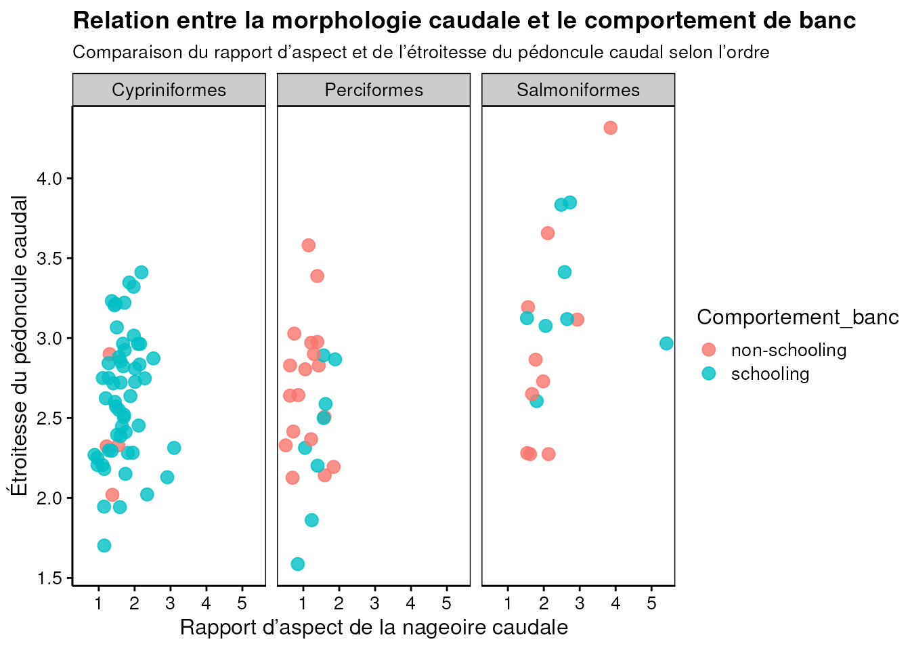
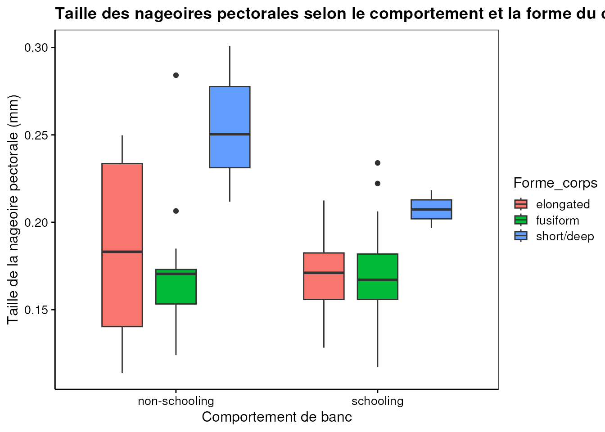
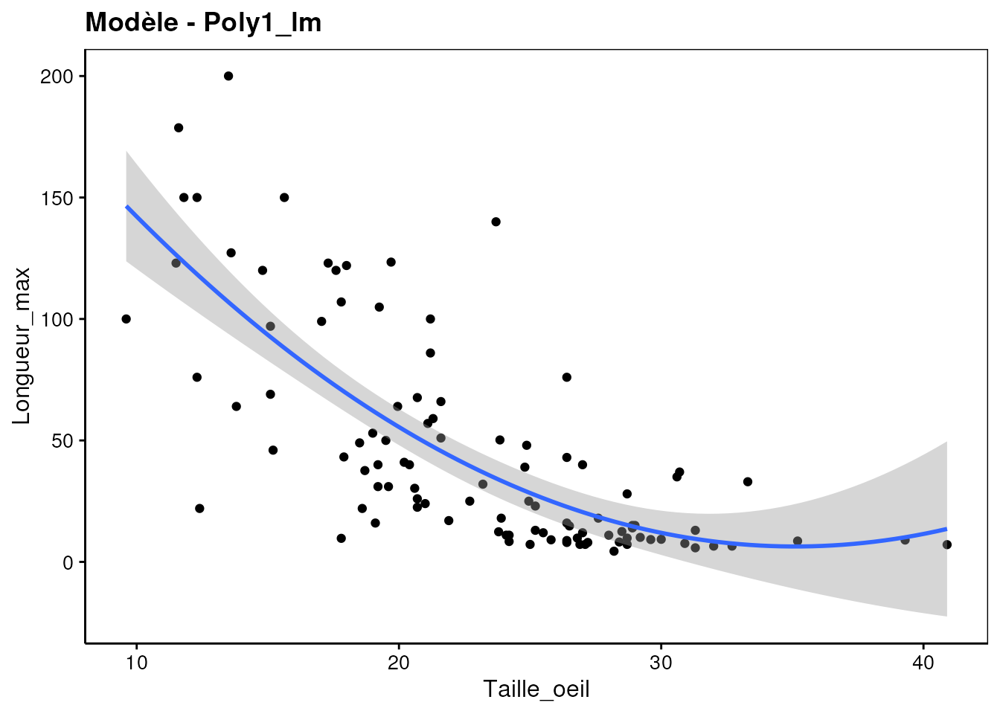
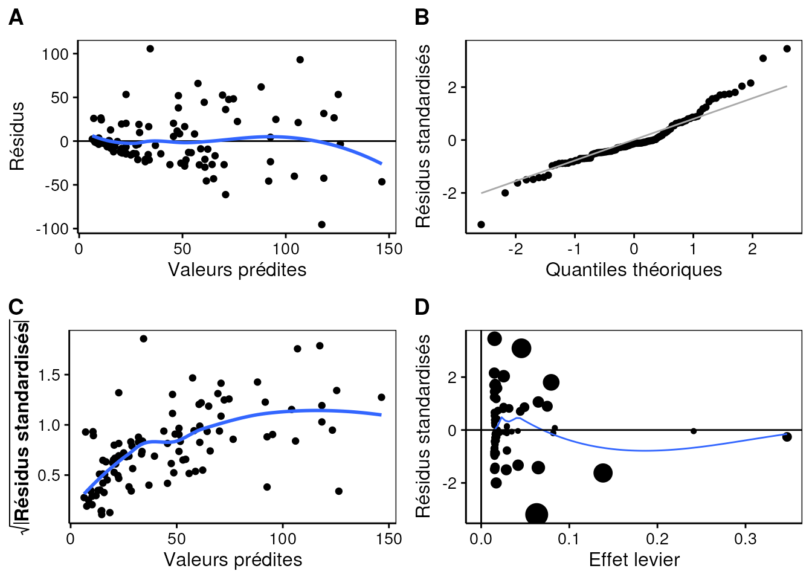
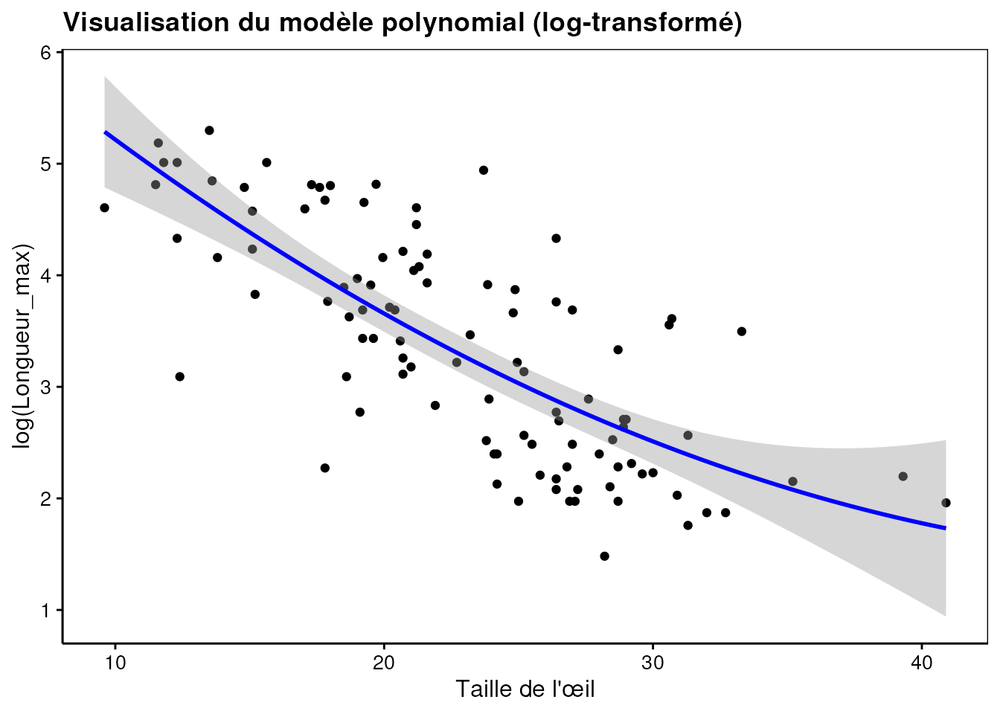
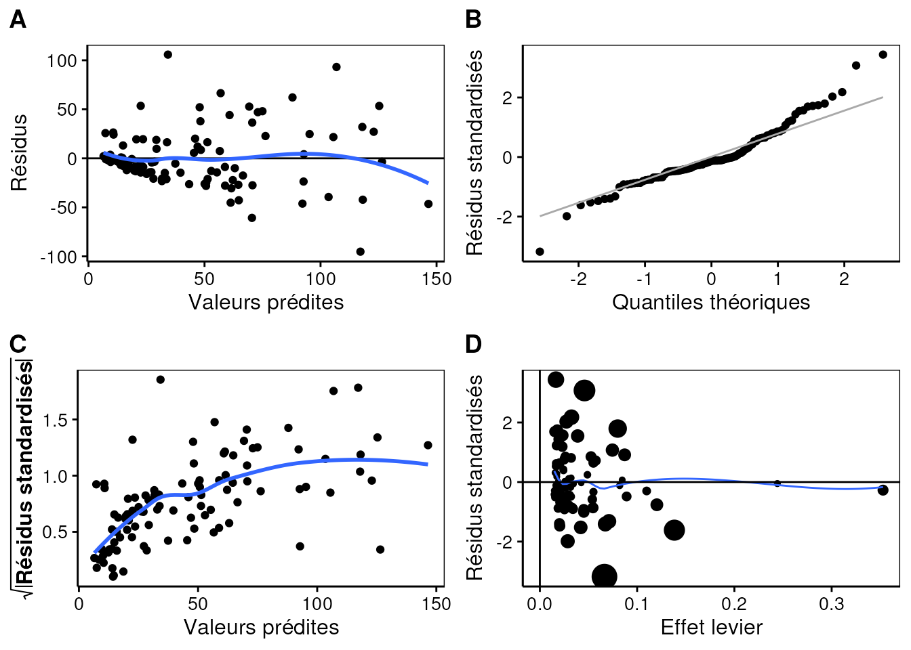
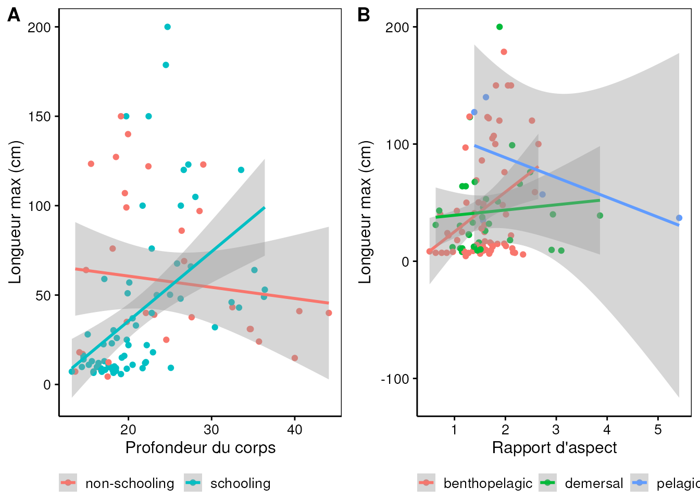
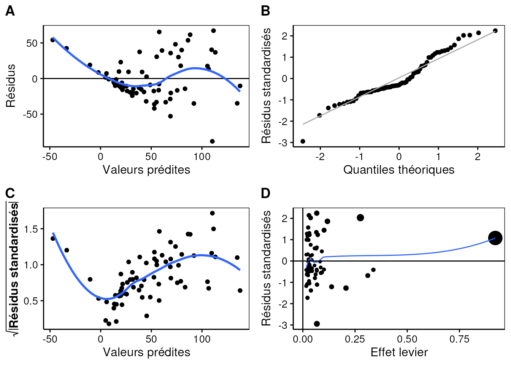
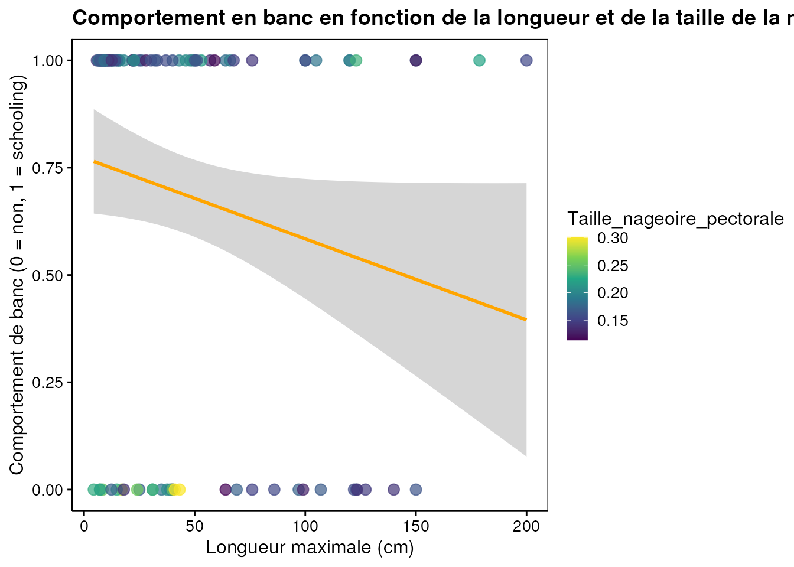

Les poissons des Grands Lacs présentent une grande diversité de morphologies et de comportements, qui influencent leur capacité à se déplacer dans leur environnement et à franchir des obstacles tels que barrages, passes à poissons ou variations de débit. L’ensemble de ces caractéristiques peut conditionner leur performance de nage et donc leurs chances de migration et de survie.
Dans ce travail, nous utilisons les données du FishPass Sortable Attribute Database (Benoit et al., 2023) qui regroupent des traits morphologiques (par ex. longueur maximale, forme du corps, taille et position des nageoires) ainsi que des traits comportementaux (position verticale dans la colonne d’eau, comportement de banc).
But :
Matériel et méthodes
Les données utilisées proviennent de la base FishPass Morphology et de la base FishPass Behaviour compilées par Benoit et al. (2023, DOI: https://doi.org/10.5061/dryad.fqz612jwj). Les deux bases ont été fusionnées par espèce (Order, Family, Genus, Scientific.Name, Common.Name), ce qui a permis d’obtenir un jeu unique intégrant à la fois des mesures morphologiques et des informations comportementales pour chaque espèce. Pour ce projet, seules les variables morphologiques et comportementales les plus pertinentes ont été retenues : longueur maximale, profondeur du corps, rapport d’aspect, étroitesse du pédoncule caudal, position et taille des nageoires pectorales, position verticale et taille de l’œil, forme du corps et comportement de banc.
Les données ont été nettoyées et harmonisées : renommage des colonnes, conversion des variables numériques, suppression des lignes avec valeurs manquantes et ajout de labels et unités. Afin d’assurer une représentativité statistique suffisante, seuls les ordres présentant un effectif ≥ 10 individus ont été conservés. Les ordres retenus pour les analyses sont Cypriniformes, Perciformes et Salmoniformes. Les autres ordres, comportant trop peu d’observations, ont été exclus pour garantir la robustesse des résultats.
Les analyses sont réalisées dans R version 4.4.1 (2024-06-14) avec le package {tidyverse} version 2.0.0 et {tabularise} version 0.7.0 pour le traitement et la visualisation des données, et {labelled} version 2.14.0 pour les labels et unités. Le seuil de significativité α est fixé à 5 %.
Analyses
Code
# Lecture des donnéesFish_data <-read.csv("data/Fish_data.csv", header =TRUE, sep =",")# Tableau des premières et dernières lignestabularise$headtail(Fish_data)
Ordre
Longueur_max
Profondeur_corps
Rapport_aspect
Etroitesse_pedoncule
Position_nageoire_pectorale
Taille_nageoire_pectorale
Forme_corps
Position_oeil_vertical
Taille_oeil
Vertical_station
Comportement_banc
Cypriniformes
25.00
19.80
1.589080
1.942322
0.2766026
0.1521917
fusiform
0.5599711
24.95
benthopelagic
schooling
Perciformes
43.00
33.30
1.047050
2.313312
0.3422356
0.1966284
short/deep
0.5244427
26.40
benthopelagic
schooling
Cypriniformes
22.00
22.20
2.111110
2.452906
0.2295423
0.1536190
fusiform
0.5408994
12.40
benthopelagic
schooling
Cypriniformes
22.00
20.00
0.883368
2.269096
0.1887432
0.1294095
fusiform
0.4339694
18.60
benthopelagic
schooling
Cypriniformes
48.00
26.27
1.947350
2.282850
0.2103180
0.1805066
fusiform
0.4387120
24.87
benthopelagic
schooling
...
...
...
...
...
...
...
...
...
...
...
...
Perciformes
127.23
18.50
1.388530
3.388259
0.3475585
0.1460195
elongated
0.3882117
13.60
pelagic
non-schooling
Perciformes
123.41
15.50
1.293890
2.900798
0.4178307
0.1405814
elongated
0.5142834
19.70
benthopelagic
non-schooling
Cypriniformes
30.30
18.20
1.106190
2.205654
0.2663538
0.1606491
fusiform
0.5093670
20.60
demersal
schooling
Cypriniformes
51.00
19.90
1.851080
3.347581
0.2075585
0.1646135
fusiform
0.6982149
21.60
demersal
schooling
Salmoniformes
76.00
18.10
1.982110
2.729114
0.3012164
0.1499792
fusiform
0.5317167
26.40
benthopelagic
non-schooling
Premières et dernières 5 lignes d'un total de 102
Description des données
Code
# Relation entre rapport d’aspect et étroitesse du pédoncule caudalchart(data = Fish_data, Etroitesse_pedoncule ~ Rapport_aspect %col=% Comportement_banc | Ordre) +geom_point(size =3, alpha =0.8) +labs(x ="Rapport d’aspect de la nageoire caudale",y ="Étroitesse du pédoncule caudal",title ="Relation entre la morphologie caudale et le comportement de banc",subtitle ="Comparaison du rapport d’aspect et de l’étroitesse du pédoncule caudal selon l’ordre" )

Le graphique illustre la relation entre le rapport d’aspect de la nageoire caudale et l’étroitesse du pédoncule caudal chez trois ordres de poissons (Cypriniformes, Perciformes et Salmoniformes), en distinguant les espèces grégaires (schooling) des espèces solitaires (non-schooling).
Globalement, on observe que les espèces grégaires(schooling) tendent à présenter des valeurs de rapport d’aspect plus élevées et un pédoncule caudal plus étroit que les espèces solitaires. Cette combinaison morphologique est typique d’une nage rapide, efficace et soutenue, adaptée aux déplacements collectifs dans la colonne d’eau. Elle favorise la réduction de la traînée hydrodynamique et une meilleure endurance, caractéristiques essentielles pour maintenir la cohésion d’un banc en mouvement.
Chez les Cypriniformes, cette tendance apparaît particulièrement nette : les espèces grégaires se concentrent dans une zone du graphique où le pédoncule est plus fin et le rapport d’aspect plus élevé.
Chez les Perciformes, la dispersion est plus grande, ce qui suggère une diversité morphologique plus importante au sein du groupe, reflétant des stratégies de nage variées selon les espèces.
Les Salmoniformes montrent un profil plus homogène, avec des morphologies globalement adaptées à la nage en pleine eau, indépendamment du comportement social, ce qui peut s’expliquer par leurs contraintes migratoires et leur mode de déplacement particulier.
Ce graphique met en évidence que les espèces présentant une morphologie caudale optimisée pour la vitesse et l’endurance c’est-à-dire un pédoncule étroit et un rapport d’aspect élevé sont majoritairement associées à un comportement grégaire. Ces résultats soutiennent l’hypothèse selon laquelle la morphologie influence la stratégie de déplacement, en particulier la capacité à se déplacer collectivement.
Code
#chart(data = Fish_data, Profondeur_corps ~ Taille_oeil %col=% Vertical_station | Ordre) +chart(data = Fish_data, Taille_oeil ~ Vertical_station %fill=% Comportement_banc) +geom_violin(trim =FALSE, alpha =0.7) +geom_boxplot(width =0.2, color ="black", alpha =0.6, position =position_dodge(width =0.9)) +geom_jitter(size =1.8, width =0.15, alpha =0.6) +labs(title ="Variation de la taille de l’œil selon la position verticale et le comportement de banc",x ="Position dans la colonne d’eau",y ="Taille de l’œil (% HL)",fill ="Comportement de banc" )
… interprétation #2…
Benthopelagic: Les espèces en groupe (bleu) ont généralement une médiane et un écart interquartile plus élevés que les espèces non-schooling (rouge). Et donc l’on peut dire que les poissons benthopelagic en groupe tendent a avoir des yeux proportionnellement plus grands,impliquant ainsi une dependance accrue a la vision dans ce comportement.
Demersal: La mediane des especes en grope(bleu) est egalement plus elevee que celle des especes non en groupe(rouge). La distribution en groupe est aussi plus compacte(moins de variabilite). Ici, le comportement en groupe est associe a des yeux plus grands, mais la distinction est moins nette que pour le groupe benthopelagic.
Pelagic: Les especes en groupe(bleu) presentent une mediane tres similaire a celle des solitaires(rouge), mais la distribution solitaire est beaucoup plus dispersee(le violon est tres large). Nous pouvons dire qu’ici la taille moyenne de l’oeil n’est pas un facteur discriminant entre le comportement en groupe chez les especes pelagiques. La grande dispersion du comportement solitaire pourrait etre due a desespeces tres profondes ou tres superficielles
Code
chart(data = Fish_data, Taille_nageoire_pectorale ~ Comportement_banc %fill=% Forme_corps) +geom_boxplot(alpha =1, width =0.6, position =position_dodge(0.8)) +labs(x ="Comportement de banc",y ="Taille de la nageoire pectorale (mm)",title ="Taille des nageoires pectorales selon le comportement et la forme du corps")

… interprétation #3…
Les poissons solitaires (non-schooling) présentent en moyenne des nageoires pectorales plus grandes que ceux se déplaçant en groupe (schooling), surtout pour les individus à corps court et profond (Short/deep). Cette différence pourrait refléter une adaptation à la nage collective, où la manœuvrabilité individuelle est moins cruciale.
Chez les individus à corps court et profond, les nageoires sont particulièrement développées chez les poissons solitaires (médiane ≈ 0,26 mm), probablement pour compenser la morphologie et assurer la stabilité. Les poissons à corps allongé (Elongated) montrent une taille intermédiaire de nageoires, avec une forte variabilité chez les solitaires (médiane ≈ 0,18 mm), ce qui pourrait refléter des stratégies adaptées à différents habitats ou comportements. Enfin, les poissons fusiformes (Fusiform) possèdent les nageoires les plus petites et les plus constantes (≈ 0,17 mm), cohérentes avec une forme hydrodynamique favorisant la nage rapide sans nécessiter de grandes nageoires.
Modélisation
Pour explorer les relations potentielles entre les différentes caractéristiques morphologiques des poissons étudiés, nous avons réalisé une analyse de corrélation de Pearson. Cette méthode permet d’évaluer la force et le sens de l’association linéaire entre deux variables quantitatives.
Warning in set2(resolve(...)): The object is read-only and cannot be modified.
If you have to modify it for a legitimate reason, call the method $lock(FALSE)
on the object before $set(). Using $lock(FALSE) to modify the object will be
enforced in future versions of knitr and this warning will become an error.
Matrice de coefficients de corrélation de Pearson r
Longueur_max
Profondeur_corps
Rapport_aspect
Etroitesse_pedoncule
Position_nageoire_pectorale
Taille_nageoire_pectorale
Position_oeil_vertical
Taille_oeil
Longueur_max
1.0000
0.2608
0.1613
0.1515
-0.08967
-0.1419
-0.0332
-0.69467
Profondeur_corps
0.2608
1.0000
-0.0571
-0.0928
-0.06114
0.4508
-0.1140
-0.38962
Rapport_aspect
0.1613
-0.0571
1.0000
0.3779
-0.25301
-0.3119
0.0494
-0.03130
Etroitesse_pedoncule
0.1515
-0.0928
0.3779
1.0000
-0.06962
-0.1302
0.1179
-0.03068
Position_nageoire_pectorale
-0.0897
-0.0611
-0.2530
-0.0696
1.00000
0.2785
0.3092
-0.00728
Taille_nageoire_pectorale
-0.1419
0.4508
-0.3119
-0.1302
0.27853
1.0000
0.0135
-0.01443
Position_oeil_vertical
-0.0332
-0.1140
0.0494
0.1179
0.30917
0.0135
1.0000
0.07805
Taille_oeil
-0.6947
-0.3896
-0.0313
-0.0307
-0.00728
-0.0144
0.0780
1.00000
La plupart des corrélations entre caractères sont faibles à modérées. Le rapport d’aspect et l’étroitesse du pédoncule caudal montrent une corrélation positive notable (r = 0,38), suggérant une adaptation à la nage rapide. La longueur maximale est fortement négativement corrélée avec la taille de l’œil (r = -0,69), tandis que la profondeur du corps est modérément liée à la taille des nageoires pectorales (r = 0,45).
Warning in set2(resolve(...)): The object is read-only and cannot be modified.
If you have to modify it for a legitimate reason, call the method $lock(FALSE)
on the object before $set(). Using $lock(FALSE) to modify the object will be
enforced in future versions of knitr and this warning will become an error.
Etendue des résidus : [-95.43, 105.6] Ecart type des résidus : 30.85 pour 99 degrés de liberté R2 multiple : 0.5452 - R2 ajusté : 0.536 Statistique F : 59.35 sur 2 et 99 ddl - valeur de p : < 2.22e-16
-Tous les coefficients sont statistiquement significatifs au seuil de 5%, ce qui signifie que la taille de l’œil et son carré ont un effet significatif sur la longueur maximale.
-Étendue des résidus : [-95.43, 105.6], les résidus sont très larges par rapport aux valeurs prédites, ce qui suggère des erreurs importantes pour certaines observations.
-Le modèle dans son ensemble est significatif et explique un peu plus de la moitié de la variation de la longueur maximale(R^2 ajusté 54%), ce qui est correct mais laisse encore beaucoup de variabilité non expliquée.
Code
# Visualisation du modèlechart(Poly1_lm)

Code
# Analyse des résiduschart$residuals(Poly1_lm)

la distribution des résidus est très élevé par rapports aux valeurs prédites (A)
Les points suivent globalement la ligne,sauf pour les grandes valeurs qui s’écartent, donc la normalité est raisonnable.(B)
La tendance ascendante montre que la variance augmente avec la valeur prédite il y a hétéroscédasticité modérée.(C)
Présence des points influents avec une grande distance de Cook et un effet de levier.
Warning in set2(resolve(...)): The object is read-only and cannot be modified.
If you have to modify it for a legitimate reason, call the method $lock(FALSE)
on the object before $set(). Using $lock(FALSE) to modify the object will be
enforced in future versions of knitr and this warning will become an error.
Modèle linéaire
logTailleoeil=α+β(Longueurmax)+ϵ
Terme
Valeur estimée
Ecart type
Valeur de t
Valeur de p
α
3.31249
0.028474
116.3
< 2·10-16
***
β
-0.00466
0.000443
-10.5
< 2·10-16
***
0 <= '***' < 0.001 < '**' < 0.01 < '*' < 0.05
Etendue des résidus : [-0.6923, 0.5051] Ecart type des résidus : 0.2015 pour 100 degrés de liberté R2 multiple : 0.5255 - R2 ajusté : 0.5207 Statistique F : 110.7 sur 1 et 100 ddl - valeur de p : < 2.22e-16
Code
#Visualisation du modelechart(Fish_rl2)

Code
#Analyse des residuschart$residuals(Fish_rl2)

Discussion:
Le modèle linéaire évaluant la relation entre la taille maximale du poisson (Longueur_max) et la taille relative de l’œil (log_Taille_oeil) révèle une relation négative hautement significative. Le coefficient associé à Longueur_max (β = –0,00466, p < 2×10⁻¹⁶) indique que, chez les poissons des Grands Lacs, la taille de l’œil diminue proportionnellement lorsque la taille corporelle augmente. Autrement dit, les petites espèces présentent des yeux proportionnellement plus grands, tandis que les grandes espèces ont des yeux proportionnellement plus petits.
Ce résultat est cohérent avec des principes biologiques déjà établis : chez de nombreux poissons, la taille relative de l’œil est liée à la stratégie sensorielle, à la vision en milieux moins lumineux et à la pression sélective de la prédation. Les petites espèces dépendant davantage de la vision pour détecter les prédateurs ou rechercher la nourriture présentent souvent des yeux proportionnellement plus développés. À l’inverse, les grandes espèces peuvent compenser leur perception visuelle par d’autres sens, comme la ligne latérale, ou évoluer dans des environnements où une vision fine est moins déterminante.
Le modèle présente un R² de 0,525, indiquant que plus de la moitié de la variation de la taille relative de l’œil est expliquée par la taille corporelle. Pour un modèle basé sur un seul prédicteur morphologique, cette valeur est substantielle et montre que la taille corporelle est un déterminant majeur de la variation observée.
L’analyse des résidus montre que les hypothèses du modèle linéaire sont globalement respectées. Les résidus sont bien centrés autour de zéro et ne montrent pas de motif systématique majeur, ce qui confirme une relation appropriée entre les variables. Le QQ-plot montre une distribution des résidus proche de la normalité, avec seulement quelques valeurs extrêmes. On observe une légère hétéroscédasticité (variance des résidus un peu plus élevée pour les grandes longueurs), mais celle-ci reste faible et ne compromet pas la validité du modèle. Aucun point à fort levier n’indique une influence excessive sur les résultats.
Modèle linéaire 1
Modèle linéaire 1
Examiner l’effet combiné de plusieurs traits morphologiques et comportementaux sur la longueur maximale.
Code
a<-chart(data = Fish_data, Longueur_max ~ Profondeur_corps %col=% Comportement_banc) +geom_point() +geom_smooth(method ="lm", formula = y ~ x, se =TRUE) +labs(x ="Profondeur du corps", y ="Longueur max (cm)") +theme(legend.position ="bottom",legend.direction ="horizontal",legend.title =element_blank())b<-chart(data = Fish_data, Longueur_max ~ Rapport_aspect %col=% Vertical_station) +geom_point() +geom_smooth(method ="lm", formula = y ~ x, se =TRUE) +labs( x ="Rapport d'aspect",y ="Longueur max (cm)") +theme(legend.position ="bottom",legend.direction ="horizontal",legend.title =element_blank()) combine_charts(list(a,b))

Le graphique Profondeur_corps - Comportement_banc démontre une forte interaction entre la morphologie et le comportement sur la Longueur_max. Pour les espèces non-schooling, la Longueur_max est stable ou diminue légèrement lorsque la Profondeur_corps augmente (pente négative). En revanche, pour les espèces schooling (cyan), la Longueur_max augmente clairement et fortement lorsque la Profondeur_corps augmente (pente positive), ce qui suggère une allométrie positive chez ce groupe où les individus plus grands sont également plus profonds ou massifs.
Le graphique Vertical_station - Rapport_aspect montre que l’effet du Rapport_aspect sur la Longueur_max est inversé selon l’habitat. Chez les espèces benthopélagiques (saumon, près du fond), l’augmentation du Rapport_aspect (vitesse) est faiblement associée à une Longueur_max plus grande (pente légèrement positive). Au contraire, chez les espèces pélagiques (bleu, pleine eau), l’augmentation du Rapport_aspect est associée à une Longueur_max plus petite (pente clairement négative), ce qui justifie l’inclusion du terme d’interaction beta_4 dans votre modèle.
Les premiers modèles présentent plusieurs limites. Le modèle initial sans interaction, bien que simple, n’explique que 51 % de la variance et ne retient qu’une seule variable significative, ce qui réduit sa pertinence biologique. L’ajout d’interactions dans le second modèle améliore légèrement l’ajustement (R² ajusté = 54 %), mais introduit une complexité importante sans gain substantiel, avec plusieurs termes non significatifs. Le troisième modèle, plus ciblé, atteint un meilleur R² (59 %), mais reste relativement complexe et inclut des variables dont l’effet est faible. Ces limites justifient la recherche d’un modèle plus parcimonieux, capable de conserver les variables biologiquement pertinentes tout en améliorant la qualité de l’ajustement.
Warning in set2(resolve(...)): The object is read-only and cannot be modified.
If you have to modify it for a legitimate reason, call the method $lock(FALSE)
on the object before $set(). Using $lock(FALSE) to modify the object will be
enforced in future versions of knitr and this warning will become an error.
Etendue des résidus : [-88.27, 67.26] Ecart type des résidus : 31.03 pour 64 degrés de liberté R2 multiple : 0.6057 - R2 ajusté : 0.581 Statistique F : 24.58 sur 4 et 64 ddl - valeur de p : 2.3794e-12
Code
chart$residuals(Fish_lm1)

Le Modèle est assez robuste avec un R^2 ajusté de 0.581 et tous ses coefficients sont significatifs, notamment le terme d’interaction qui confirme l’inversion de la pente pour les pélagiques. Cependant, le diagnostic des résidus (Image C) révèle une hétéroscédasticité (variance des erreurs augmente avec les valeurs prédites), justifiant l’utilisation d’une transformation logarithmique sur la Longueur_max dans le prochain modèle pour stabiliser la variance et améliorer la précision des coefficients.
Warning in set2(resolve(...)): The object is read-only and cannot be modified.
If you have to modify it for a legitimate reason, call the method $lock(FALSE)
on the object before $set(). Using $lock(FALSE) to modify the object will be
enforced in future versions of knitr and this warning will become an error.
Etendue des résidus : [-13.56, 13.35] Ecart type des résidus : 4.417 pour 98 degrés de liberté R2 multiple : 0.5131 - R2 ajusté : 0.4982 Statistique F : 34.43 sur 3 et 98 ddl - valeur de p : 2.7754e-15
le modèle est significatif dans son ensemble (R²ajusté = 0.4982), expliquant environ 50% de la variation de la taille d’œil.
Toutes les variables et l’interaction sont significatives (p < 0.05), ce qui confirme la pertinence de l’effet combiné de la taille corporelle et du comportement de banc.
Les résidus sont raisonnables (étendue [-13.56, 13.35]), suggérant que le modèle est bien ajusté.
La taille de l’œil augmente avec la taille du corps, mais cet effet est plus marqué chez les poissons solitaires que chez ceux nageant en groupe, reflétant une moindre dépendance à la vision individuelle en banc.
Code
chart(data = Fish_data, Taille_oeil ~ Longueur_max %col=% Comportement_banc) +geom_point() +stat_smooth(method ="lm", formula = y ~ x)
-Les poissons non-schooling ont une relation plus linéaire et moins raide. -Les poissons schooling montrent une pente plus prononcée, confirmant l’interaction trouvée dans le modèle (β3).
Code
# Analyse des résiduschart$residuals(Fish_lm2)
L’etendue des residus est elevée par rapport aux valeurs prédites
Les résidus suivent à peu près une distribution normale
Il n’ y a pas de tendance forte, homoscédasticité
Il y a présence d’observations influentes par leur distance de cook
Une observation a un effet de levier important avec une distance de cook influente
Dans notre jeu de données, l’inclusion d’un effet aléatoire sur la variable Ordre n’est pas appropriée. En effet, ce facteur ne comporte que trois niveaux, ce qui est insuffisant pour estimer de manière fiable la variance d’un intercept aléatoire dans un modèle mixte. Les modèles à effets aléatoires requièrent un nombre de groupes nettement plus élevé afin d’obtenir une estimation stable et interprétable des paramètres. Dans notre cas, l’ajustement du modèle présente une non-convergence et une matrice Hessienne singulière, indiquant que les paramètres ne peuvent pas être déterminés de façon unique. Compte tenu de ces limitations méthodologiques, nous avons donc opté pour un modèle linéaire généralisé (GLM) classique, qui permet d’évaluer efficacement l’influence des variables explicatives sur la probabilité d’appartenir à la forme “short/deep”, sans dépendre d’un effet aléatoire impossible à estimer de manière fiable dans ce cas.
Code
#Fish_data$Forme_deep <- ifelse(Fish_data$Forme_corps == "short/deep", 1, ifelse(Fish_data$Forme_corps == "fusiforme", 0, NA))#Fish_data2 <- subset(Fish_data, !is.na(Forme_deep))#Fish_glm2 <- glm(data = Fish_data2, Forme_deep ~ Rapport_aspect + Etroitesse_pedoncule + Vertical_station, family = binomial(link = "logit"))#Fish_glm2 <- glm(data = Fish_data2, Forme_deep ~ Rapport_aspect + Etroitesse_pedoncule + Vertical_station, family = quasibinomial)# Sous-échantillonnage pour ne garder que les deux groupes souhaitésFish_data2 <-subset(Fish_data, Forme_corps %in%c("fusiform", "elongated"))# Recoder la variable cible binaire:Fish_data2$Forme_bin <-ifelse(Fish_data2$Forme_corps =="elongated", 1, 0)# Modèle logistique (GLM binaire)Fish_glm1 <-glm(data = Fish_data2, Forme_bin ~ Longueur_max + Profondeur_corps + Rapport_aspect + Etroitesse_pedoncule, family =binomial(link ="logit"))summary(Fish_glm1) |>tabularise ()
Warning in set2(resolve(...)): The object is read-only and cannot be modified.
If you have to modify it for a legitimate reason, call the method $lock(FALSE)
on the object before $set(). Using $lock(FALSE) to modify the object will be
enforced in future versions of knitr and this warning will become an error.
Modèle linéaire généralisé
Terme
Valeur estimée
Ecart type
Valeur de z
Valeur de p
Ordonnée à l’origine
14.2691
4.567
3.125
0.001780
Longueur_max
-0.0115
0.012
-0.954
0.340005
Profondeur_corps
-1.0498
0.270
-3.889
0.000101
Rapport_aspect
-0.6163
0.881
-0.699
0.484396
Etroitesse_pedoncule
1.9322
1.090
1.773
0.076310
0 <= '***' < 0.001 < '**' < 0.01 < '*' < 0.05
(Paramètre de dispersion pour une Binomial family: 1) Déviance totale : 111.4 pour 91 degrés de liberté Déviance résiduelle : 45 pour 87 degrés de liberté AIC: 55 - Nombre d’itérations de la fonction de score de Fisher : 7
J’ai voulu d’abord comparer la forme “short/deep” avec “fusiforme” avec un modèle logistique, mais il y avait très peu de “short/deep” dans mon jeu de données. Ça donnait des messages d’erreur et des résultats impossibles à interpréter. Du coup, j’ai choisi de comparer les formes “fusiform” et “elongated”, car il y a assez d’individus dans chaque groupe pour faire un modèle. J’ai donc gardé seulement ces deux types de formes et j’ai créé une nouvelle variable binaire (=1 si “elongated”, 0 si “fusiform”).
J’ai utilisé un modèle linéaire généralisé avec les variables morphométriques suivantes: Longueur_max, Profondeur_corps, Rapport_aspect et Etroitesse_pedoncule.
Le modèle a bien fonctionné et j’ai pu voir quelles variables influencent le plus la probabilité qu’un poisson ait une forme “elongated” plutôt que “fusiform”. Un effet positif signifie que ça augmente les chances d’être “elongated”, un effet négatif veut dire l’inverse.
Code
#Visualisation du modèle# Ajoute la colonne probabilité prédite si ce n'est pas déjà faitFish_data2$prob_elongated <-predict(Fish_glm1, type ="response")# Visualisationchart(data = Fish_data2, prob_elongated ~ Profondeur_corps %col=% Rapport_aspect) +geom_point(size =3, alpha =0.7) +scale_color_viridis_c() +geom_smooth(method ="glm", formula = y ~ x, se =TRUE, color ="magenta") +labs(x ="Profondeur du corps",y ="Probabilité d'être elongated (modèle GLM)",title ="Probabilité d'être elongated selon la profondeur du corps\nCouleur : Rapport d'aspect" )
Le premier modèle, basé uniquement sur la longueur maximale, présente une faible capacité explicative (AIC = 127,6) et ne montre qu’un effet marginalement significatif. Le second modèle améliore l’ajustement (AIC = 120,1) mais reste limité par la complexité croissante et la sensibilité des coefficients.
Warning in set2(resolve(...)): The object is read-only and cannot be modified.
If you have to modify it for a legitimate reason, call the method $lock(FALSE)
on the object before $set(). Using $lock(FALSE) to modify the object will be
enforced in future versions of knitr and this warning will become an error.
(Paramètre de dispersion pour une Binomial family: 1) Déviance totale : 126.9 pour 101 degrés de liberté Déviance résiduelle : 96.72 pour 98 degrés de liberté AIC: 104.7 - Nombre d’itérations de la fonction de score de Fisher : 5
Code
chart(data = Fish_data, Comportement_banc_num ~ Longueur_max %col=% Taille_nageoire_pectorale ) +geom_point(size =3, alpha =0.7) +scale_color_viridis_c() +geom_smooth(method ="glm", formula = y ~ x, se =TRUE, color ="orange") +labs( x ="Longueur maximale (cm)",y ="Comportement de banc (0 = non, 1 = schooling)",title ="Comportement en banc en fonction de la longueur et de la taille de la nageoire pectorale")

Discussion: Ide
Conclusion
…vos conclusions ici…
Références
Code source
---title: "Relations morphologie-comportement chez les poissons des Grands Lacs : (à completer)"author: "Amal Abarou, Ide Tchuileng, Christelle Baseka"format: html: code-fold: true code-tools: true toc: trueeditor: visuallang: frbibliography: references.bib---<!--# Ceci est un commentaire. --><!--% Ceci est une consigne. Ne jamais modifier ni déplacer les consignes dans le document ! --><!--% Complétez le titre et le nom des auteurs (auteur1, auteur2, auteur3 et auteur 4) dans l'entête YAML.-->## Introduction et but<!--% Rédigez une courte introduction de 3 ou 5 phrases qui présente vos données. Ajoutez une phrase de but (que vous remanierez éventuellement en fonction des modèles que vous ajouterez plus tard). Vous pouvez citer la bibliographie en utilisant le formatage Markdown ad hoc et en incluant votre référence au format bibtex dans le fichier references.bib. -->... Introduction et but...Les poissons des Grands Lacs présentent une grande diversité de morphologies et de comportements, qui influencent leur capacité à se déplacer dans leur environnement et à franchir des obstacles tels que barrages, passes à poissons ou variations de débit. L’ensemble de ces caractéristiques peut conditionner leur performance de nage et donc leurs chances de migration et de survie.Dans ce travail, nous utilisons les données du *FishPass Sortable Attribute Database* (Benoit *et al.*, 2023) qui regroupent des traits morphologiques (par ex. longueur maximale, forme du corps, taille et position des nageoires) ainsi que des traits comportementaux (position verticale dans la colonne d'eau, comportement de banc).**But** :## Matériel et méthodes<!--% Indiquez ici d'où viennent les données et aussi quel logiciel (et version) vous utilisez pour les analyses. Inspirez-vous des projets du premier module de SDD II. -->Les données utilisées proviennent de la base FishPass Morphology et de la base FishPass Behaviour compilées par Benoit et al. (2023, DOI: <https://doi.org/10.5061/dryad.fqz612jwj>). Les deux bases ont été fusionnées par espèce (Order, Family, Genus, Scientific.Name, Common.Name), ce qui a permis d’obtenir un jeu unique intégrant à la fois des mesures morphologiques et des informations comportementales pour chaque espèce. Pour ce projet, seules les variables morphologiques et comportementales les plus pertinentes ont été retenues : longueur maximale, profondeur du corps, rapport d’aspect, étroitesse du pédoncule caudal, position et taille des nageoires pectorales, position verticale et taille de l’œil, forme du corps et comportement de banc.Les données ont été nettoyées et harmonisées : renommage des colonnes, conversion des variables numériques, suppression des lignes avec valeurs manquantes et ajout de labels et unités. Afin d’assurer une représentativité statistique suffisante, seuls les ordres présentant un effectif ≥ 10 individus ont été conservés. Les ordres retenus pour les analyses sont *Cypriniformes, Perciformes et Salmoniformes.* Les autres ordres, comportant trop peu d’observations, ont été exclus pour garantir la robustesse des résultats.Les analyses sont réalisées dans `r R.version.string` avec le package `{tidyverse}` version `r packageVersion("tidyverse")` et `{tabularise}` version `r packageVersion("tabularise")` pour le traitement et la visualisation des données, et `{labelled}` version `r packageVersion("labelled")` pour les labels et unités. Le seuil de significativité α est fixé à 5 %.## Analyses```{r setup, include=FALSE}# Ceci est nécessaire pour les tests SDD, ne pas utiliser dans un "vrai" projetif (!"tools:tests" %in% search()) source(here::here("tests/tools_tests.R"), attach(NULL, name = "tools:tests"))# Configure Knitr to use AGG as graphic deviceknitr::opts_chunk$set(dev = "ragg_png")# Configuration de l'environnementSciViews::R("model","infer", lang = "fr")```<!--% Importez les données que vous aurez préalablement nettoyées, remaniées et labélisées dans le script R nommé `R/import.R`. -->```{r import}# Lecture des donnéesFish_data <- read.csv("data/Fish_data.csv", header = TRUE, sep = ",")# Tableau des premières et dernières lignestabularise$headtail(Fish_data)```### Description des données<!--% Chaque étudiant réalise et interprète un graphique pertinent en lien avec le but fixé et les modèles qui seront réalisés. Graphique et interprétation de l'étudiant #1 ci-dessous. -->```{r chart1 }# Relation entre rapport d’aspect et étroitesse du pédoncule caudalchart(data = Fish_data, Etroitesse_pedoncule ~ Rapport_aspect %col=% Comportement_banc | Ordre) + geom_point(size = 3, alpha = 0.8) + labs( x = "Rapport d’aspect de la nageoire caudale", y = "Étroitesse du pédoncule caudal", title = "Relation entre la morphologie caudale et le comportement de banc", subtitle = "Comparaison du rapport d’aspect et de l’étroitesse du pédoncule caudal selon l’ordre" )```Le graphique illustre la relation entre le rapport d’aspect de la nageoire caudale et l’étroitesse du pédoncule caudal chez trois ordres de poissons (Cypriniformes, Perciformes et Salmoniformes), en distinguant les espèces grégaires (schooling) des espèces solitaires (non-schooling).Globalement, on observe que les espèces grégaires(schooling) tendent à présenter des valeurs de rapport d’aspect plus élevées et un pédoncule caudal plus étroit que les espèces solitaires. Cette combinaison morphologique est typique d’une nage rapide, efficace et soutenue, adaptée aux déplacements collectifs dans la colonne d’eau. Elle favorise la réduction de la traînée hydrodynamique et une meilleure endurance, caractéristiques essentielles pour maintenir la cohésion d’un banc en mouvement.Chez les Cypriniformes, cette tendance apparaît particulièrement nette : les espèces grégaires se concentrent dans une zone du graphique où le pédoncule est plus fin et le rapport d’aspect plus élevé.\Chez les Perciformes, la dispersion est plus grande, ce qui suggère une diversité morphologique plus importante au sein du groupe, reflétant des stratégies de nage variées selon les espèces.\Les Salmoniformes montrent un profil plus homogène, avec des morphologies globalement adaptées à la nage en pleine eau, indépendamment du comportement social, ce qui peut s’expliquer par leurs contraintes migratoires et leur mode de déplacement particulier.Ce graphique met en évidence que les espèces présentant une morphologie caudale optimisée pour la vitesse et l’endurance c’est-à-dire un pédoncule étroit et un rapport d’aspect élevé sont majoritairement associées à un comportement grégaire. Ces résultats soutiennent l’hypothèse selon laquelle la morphologie influence la stratégie de déplacement, en particulier la capacité à se déplacer collectivement.<!--% Graphique et interprétation de l'étudiant #2 ci-dessous. -->```{r chart2} +}#chart(data = Fish_data, Profondeur_corps ~ Taille_oeil %col=% Vertical_station | Ordre) +chart(data = Fish_data, Taille_oeil ~ Vertical_station %fill=% Comportement_banc) + geom_violin(trim = FALSE, alpha = 0.7) + geom_boxplot(width = 0.2, color = "black", alpha = 0.6, position = position_dodge(width = 0.9)) + geom_jitter(size = 1.8, width = 0.15, alpha = 0.6) + labs( title = "Variation de la taille de l’œil selon la position verticale et le comportement de banc", x = "Position dans la colonne d’eau", y = "Taille de l’œil (% HL)", fill = "Comportement de banc" )```... interprétation #2...Benthopelagic: Les espèces en groupe (bleu) ont généralement une médiane et un écart interquartile plus élevés que les espèces non-schooling (rouge). Et donc l'on peut dire que les poissons benthopelagic en groupe tendent a avoir des yeux proportionnellement plus grands,impliquant ainsi une dependance accrue a la vision dans ce comportement.Demersal: La mediane des especes en grope(bleu) est egalement plus elevee que celle des especes non en groupe(rouge). La distribution en groupe est aussi plus compacte(moins de variabilite). Ici, le comportement en groupe est associe a des yeux plus grands, mais la distinction est moins nette que pour le groupe benthopelagic.Pelagic: Les especes en groupe(bleu) presentent une mediane tres similaire a celle des solitaires(rouge), mais la distribution solitaire est beaucoup plus dispersee(le violon est tres large). Nous pouvons dire qu'ici la taille moyenne de l'oeil n'est pas un facteur discriminant entre le comportement en groupe chez les especes pelagiques. La grande dispersion du comportement solitaire pourrait etre due a desespeces tres profondes ou tres superficielles<!--% Graphique et interprétation de l'étudiant #3 ci-dessous. -->```{r chart3 }chart(data = Fish_data, Taille_nageoire_pectorale ~ Comportement_banc %fill=% Forme_corps) + geom_boxplot(alpha = 1, width = 0.6, position = position_dodge(0.8)) + labs( x = "Comportement de banc", y = "Taille de la nageoire pectorale (mm)", title = "Taille des nageoires pectorales selon le comportement et la forme du corps") ```... interprétation #3...Les poissons solitaires (non-schooling) présentent en moyenne des nageoires pectorales plus grandes que ceux se déplaçant en groupe (schooling), surtout pour les individus à corps court et profond (Short/deep). Cette différence pourrait refléter une adaptation à la nage collective, où la manœuvrabilité individuelle est moins cruciale.Chez les individus à corps court et profond, les nageoires sont particulièrement développées chez les poissons solitaires (médiane ≈ 0,26 mm), probablement pour compenser la morphologie et assurer la stabilité. Les poissons à corps allongé (Elongated) montrent une taille intermédiaire de nageoires, avec une forte variabilité chez les solitaires (médiane ≈ 0,18 mm), ce qui pourrait refléter des stratégies adaptées à différents habitats ou comportements. Enfin, les poissons fusiformes (Fusiform) possèdent les nageoires les plus petites et les plus constantes (≈ 0,17 mm), cohérentes avec une forme hydrodynamique favorisant la nage rapide sans nécessiter de grandes nageoires.### ModélisationPour explorer les relations potentielles entre les différentes caractéristiques morphologiques des poissons étudiés, nous avons réalisé une analyse de corrélation de Pearson. Cette méthode permet d’évaluer la force et le sens de l’association linéaire entre deux variables quantitatives.```{r corr}(Fish_data_corr <- correlation(sselect(Fish_data,Longueur_max, Profondeur_corps, Rapport_aspect, Etroitesse_pedoncule, Position_nageoire_pectorale, Taille_nageoire_pectorale, Position_oeil_vertical, Taille_oeil))) |> tabularise()```La plupart des corrélations entre caractères sont faibles à modérées. Le rapport d’aspect et l’étroitesse du pédoncule caudal montrent une corrélation positive notable (r = 0,38), suggérant une adaptation à la nage rapide. La longueur maximale est fortement négativement corrélée avec la taille de l’œil (r = -0,69), tandis que la profondeur du corps est modérément liée à la taille des nageoires pectorales (r = 0,45).<!--% Chaque modèle doit être décrit à l'aide d'un graphique et d'un tableau résumant le modèle. Les équations paramétrées de tous les modèles doivent être également présentes. L'analyse des résidus sera réalisée et interprétée pour chaque modèle. -->#### Régression linéaire 1<!--% Ajustez une régression linéaire simple, multiple ou polynomiale par paire d'étudiants dans cette section (donc, deux modèles pour l'équipe de quatre). -->```{r}# Modèle de régression linéaire polynomial#Poly1_lm <- lm(data = Fish_data, Longueur_max ~ Taille_oeil)Poly1_lm <-lm(data = Fish_data, Longueur_max ~ Taille_oeil +I(Taille_oeil^2))summary_(Poly1_lm) |>tabularise()```-Tous les coefficients sont statistiquement significatifs au seuil de 5%, ce qui signifie que la taille de l’œil et son carré ont un effet significatif sur la longueur maximale.-Étendue des résidus : \[-95.43, 105.6\], les résidus sont très larges par rapport aux valeurs prédites, ce qui suggère des erreurs importantes pour certaines observations.-Le modèle dans son ensemble est significatif et explique un peu plus de la moitié de la variation de la longueur maximale(R\^2 ajusté 54%), ce qui est correct mais laisse encore beaucoup de variabilité non expliquée.```{r}# Visualisation du modèlechart(Poly1_lm)``````{r}# Analyse des résiduschart$residuals(Poly1_lm)```- la distribution des résidus est très élevé par rapports aux valeurs prédites (A)- Les points suivent globalement la ligne,sauf pour les grandes valeurs qui s'écartent, donc la normalité est raisonnable.(B)- La tendance ascendante montre que la variance augmente avec la valeur prédite il y a hétéroscédasticité modérée.(C)- Présence des points influents avec une grande distance de Cook et un effet de levier.#### Régression linéaire 2<!--% Ajustez une régression linéaire simple, multiple ou polynomiale par paire d'étudiants dans cette section (donc, deux modèles pour l'équipe de quatre). --><!--% Construisez un modèle linéaire par paire d'étudiants dans cette section. -->```{r}Fish_data$log_Taille_oeil <-log(Fish_data$Taille_oeil)Fish_rl2 <-lm(data = Fish_data,log_Taille_oeil ~ Longueur_max )summary_(Fish_rl2) |>tabularise()``````{r}#Visualisation du modelechart(Fish_rl2)``````{r}#Analyse des residuschart$residuals(Fish_rl2)```Discussion:Le modèle linéaire évaluant la relation entre la taille maximale du poisson (Longueur_max) et la taille relative de l’œil (log_Taille_oeil) révèle une relation négative hautement significative. Le coefficient associé à Longueur_max (β = –0,00466, p \< 2×10⁻¹⁶) indique que, chez les poissons des Grands Lacs, la taille de l’œil diminue proportionnellement lorsque la taille corporelle augmente. Autrement dit, les petites espèces présentent des yeux proportionnellement plus grands, tandis que les grandes espèces ont des yeux proportionnellement plus petits.Ce résultat est cohérent avec des principes biologiques déjà établis : chez de nombreux poissons, la taille relative de l’œil est liée à la stratégie sensorielle, à la vision en milieux moins lumineux et à la pression sélective de la prédation. Les petites espèces dépendant davantage de la vision pour détecter les prédateurs ou rechercher la nourriture présentent souvent des yeux proportionnellement plus développés. À l’inverse, les grandes espèces peuvent compenser leur perception visuelle par d’autres sens, comme la ligne latérale, ou évoluer dans des environnements où une vision fine est moins déterminante.Le modèle présente un R² de 0,525, indiquant que plus de la moitié de la variation de la taille relative de l’œil est expliquée par la taille corporelle. Pour un modèle basé sur un seul prédicteur morphologique, cette valeur est substantielle et montre que la taille corporelle est un déterminant majeur de la variation observée.L’analyse des résidus montre que les hypothèses du modèle linéaire sont globalement respectées. Les résidus sont bien centrés autour de zéro et ne montrent pas de motif systématique majeur, ce qui confirme une relation appropriée entre les variables. Le QQ-plot montre une distribution des résidus proche de la normalité, avec seulement quelques valeurs extrêmes. On observe une légère hétéroscédasticité (variance des résidus un peu plus élevée pour les grandes longueurs), mais celle-ci reste faible et ne compromet pas la validité du modèle. Aucun point à fort levier n’indique une influence excessive sur les résultats.#### Modèle linéaire 1Modèle linéaire 1<!--% Construisez un modèle linéaire par paire d'étudiants dans cette section. -->Examiner l’effet combiné de plusieurs traits morphologiques et comportementaux sur la longueur maximale.```{r}a<-chart(data = Fish_data, Longueur_max ~ Profondeur_corps %col=% Comportement_banc) +geom_point() +geom_smooth(method ="lm", formula = y ~ x, se =TRUE) +labs(x ="Profondeur du corps", y ="Longueur max (cm)") +theme(legend.position ="bottom",legend.direction ="horizontal",legend.title =element_blank())b<-chart(data = Fish_data, Longueur_max ~ Rapport_aspect %col=% Vertical_station) +geom_point() +geom_smooth(method ="lm", formula = y ~ x, se =TRUE) +labs( x ="Rapport d'aspect",y ="Longueur max (cm)") +theme(legend.position ="bottom",legend.direction ="horizontal",legend.title =element_blank()) combine_charts(list(a,b))```Le graphique Profondeur_corps - Comportement_banc démontre une forte interaction entre la morphologie et le comportement sur la Longueur_max. Pour les espèces non-schooling, la Longueur_max est stable ou diminue légèrement lorsque la Profondeur_corps augmente (pente négative). En revanche, pour les espèces schooling (cyan), la Longueur_max augmente clairement et fortement lorsque la Profondeur_corps augmente (pente positive), ce qui suggère une allométrie positive chez ce groupe où les individus plus grands sont également plus profonds ou massifs.Le graphique Vertical_station - Rapport_aspect montre que l'effet du Rapport_aspect sur la Longueur_max est inversé selon l'habitat. Chez les espèces benthopélagiques (saumon, près du fond), l'augmentation du Rapport_aspect (vitesse) est faiblement associée à une Longueur_max plus grande (pente légèrement positive). Au contraire, chez les espèces pélagiques (bleu, pleine eau), l'augmentation du Rapport_aspect est associée à une Longueur_max plus petite (pente clairement négative), ce qui justifie l'inclusion du terme d'interaction beta_4 dans votre modèle.```{r}#Fish_lm1A <- lm(data = Fish_data, Longueur_max ~ Taille_oeil + Profondeur_corps + Vertical_station + Profondeur_corps + Comportement_banc + Vertical_station + Rapport_aspect) #summary(Fish_lm1A) #Fish_lm1B <- lm(data = Fish_data, Longueur_max ~ Taille_oeil + Profondeur_corps + Vertical_station + Profondeur_corps * Comportement_banc + Vertical_station * Rapport_aspect) #summary(Fish_lm1B) #Fish_lm1C <- lm(data = Fish_data, subset = Vertical_station %in% c("pelagic", "benthopelagic"), Longueur_max ~ Taille_oeil + Profondeur_corps + Vertical_station + Profondeur_corps * Comportement_banc + Vertical_station * Rapport_aspect) #summary_(Fish_lm1C)```Les premiers modèles présentent plusieurs limites. Le modèle initial sans interaction, bien que simple, n’explique que 51 % de la variance et ne retient qu’une seule variable significative, ce qui réduit sa pertinence biologique. L’ajout d’interactions dans le second modèle améliore légèrement l’ajustement (R² ajusté = 54 %), mais introduit une complexité importante sans gain substantiel, avec plusieurs termes non significatifs. Le troisième modèle, plus ciblé, atteint un meilleur R² (59 %), mais reste relativement complexe et inclut des variables dont l’effet est faible. Ces limites justifient la recherche d’un modèle plus parcimonieux, capable de conserver les variables biologiquement pertinentes tout en améliorant la qualité de l’ajustement.```{r}Fish_lm1 <-lm(data = Fish_data,subset = Vertical_station %in%c("pelagic", "benthopelagic"), Longueur_max ~ Taille_oeil + Vertical_station + Vertical_station * Rapport_aspect)summary_(Fish_lm1) |>tabularise()``````{r}chart$residuals(Fish_lm1)```Le Modèle est assez robuste avec un R\^2 ajusté de 0.581 et tous ses coefficients sont significatifs, notamment le terme d'interaction qui confirme l'inversion de la pente pour les pélagiques. Cependant, le diagnostic des résidus (Image C) révèle une hétéroscédasticité (variance des erreurs augmente avec les valeurs prédites), justifiant l'utilisation d'une transformation logarithmique sur la Longueur_max dans le prochain modèle pour stabiliser la variance et améliorer la précision des coefficients.#### Modèle linéaire 2<!--% Construisez un modèle linéaire par paire d'étudiants dans cette section. -->```{r}Fish_lm2 <-lm(data = Fish_data, Taille_oeil ~ Longueur_max * Comportement_banc)summary_(Fish_lm2) |>tabularise ()```- le modèle est significatif dans son ensemble (R²ajusté = 0.4982), expliquant environ 50% de la variation de la taille d’œil.- Toutes les variables et l'interaction sont significatives (p \< 0.05), ce qui confirme la pertinence de l’effet combiné de la taille corporelle et du comportement de banc.- Les résidus sont raisonnables (étendue \[-13.56, 13.35\]), suggérant que le modèle est bien ajusté.- La taille de l’œil augmente avec la taille du corps, mais cet effet est plus marqué chez les poissons solitaires que chez ceux nageant en groupe, reflétant une moindre dépendance à la vision individuelle en banc.```{r}chart(data = Fish_data, Taille_oeil ~ Longueur_max %col=% Comportement_banc) +geom_point() +stat_smooth(method ="lm", formula = y ~ x)```-Les poissons non-schooling ont une relation plus linéaire et moins raide. -Les poissons schooling montrent une pente plus prononcée, confirmant l’interaction trouvée dans le modèle (β3).```{r}# Analyse des résiduschart$residuals(Fish_lm2)```- L'etendue des residus est elevée par rapport aux valeurs prédites- Les résidus suivent à peu près une distribution normale- Il n' y a pas de tendance forte, homoscédasticité- Il y a présence d'observations influentes par leur distance de cook- Une observation a un effet de levier important avec une distance de cook influente#### Modèle linéaire généralisé et/ou mixte 1<!--% Élaborez un modèle linéaire généralisé ou mixte par paire d'étudiants dans cette section. -->```{r}#library(lme4)#Fish_glm2 <- glmer(data = Fish_data, Forme_deep ~ Rapport_aspect + Etroitesse_pedoncule + Vertical_station + (1 | Ordre), family = binomial())#summary(Fish_glm2)```Dans notre jeu de données, l’inclusion d’un effet aléatoire sur la variable Ordre n’est pas appropriée. En effet, ce facteur ne comporte que trois niveaux, ce qui est insuffisant pour estimer de manière fiable la variance d’un intercept aléatoire dans un modèle mixte. Les modèles à effets aléatoires requièrent un nombre de groupes nettement plus élevé afin d’obtenir une estimation stable et interprétable des paramètres. Dans notre cas, l’ajustement du modèle présente une non-convergence et une matrice Hessienne singulière, indiquant que les paramètres ne peuvent pas être déterminés de façon unique. Compte tenu de ces limitations méthodologiques, nous avons donc opté pour un modèle linéaire généralisé (GLM) classique, qui permet d’évaluer efficacement l’influence des variables explicatives sur la probabilité d’appartenir à la forme “short/deep”, sans dépendre d’un effet aléatoire impossible à estimer de manière fiable dans ce cas.```{r}#Fish_data$Forme_deep <- ifelse(Fish_data$Forme_corps == "short/deep", 1, ifelse(Fish_data$Forme_corps == "fusiforme", 0, NA))#Fish_data2 <- subset(Fish_data, !is.na(Forme_deep))#Fish_glm2 <- glm(data = Fish_data2, Forme_deep ~ Rapport_aspect + Etroitesse_pedoncule + Vertical_station, family = binomial(link = "logit"))#Fish_glm2 <- glm(data = Fish_data2, Forme_deep ~ Rapport_aspect + Etroitesse_pedoncule + Vertical_station, family = quasibinomial)# Sous-échantillonnage pour ne garder que les deux groupes souhaitésFish_data2 <-subset(Fish_data, Forme_corps %in%c("fusiform", "elongated"))# Recoder la variable cible binaire:Fish_data2$Forme_bin <-ifelse(Fish_data2$Forme_corps =="elongated", 1, 0)# Modèle logistique (GLM binaire)Fish_glm1 <-glm(data = Fish_data2, Forme_bin ~ Longueur_max + Profondeur_corps + Rapport_aspect + Etroitesse_pedoncule, family =binomial(link ="logit"))summary(Fish_glm1) |>tabularise ()```J’ai voulu d’abord comparer la forme “short/deep” avec “fusiforme” avec un modèle logistique, mais il y avait très peu de “short/deep” dans mon jeu de données. Ça donnait des messages d’erreur et des résultats impossibles à interpréter. Du coup, j’ai choisi de comparer les formes “fusiform” et “elongated”, car il y a assez d’individus dans chaque groupe pour faire un modèle. J’ai donc gardé seulement ces deux types de formes et j’ai créé une nouvelle variable binaire (=1 si “elongated”, 0 si “fusiform”).J’ai utilisé un modèle linéaire généralisé avec les variables morphométriques suivantes: Longueur_max, Profondeur_corps, Rapport_aspect et Etroitesse_pedoncule.Le modèle a bien fonctionné et j’ai pu voir quelles variables influencent le plus la probabilité qu’un poisson ait une forme “elongated” plutôt que “fusiform”. Un effet positif signifie que ça augmente les chances d’être “elongated”, un effet négatif veut dire l’inverse.```{r}#Visualisation du modèle# Ajoute la colonne probabilité prédite si ce n'est pas déjà faitFish_data2$prob_elongated <-predict(Fish_glm1, type ="response")# Visualisationchart(data = Fish_data2, prob_elongated ~ Profondeur_corps %col=% Rapport_aspect) +geom_point(size =3, alpha =0.7) +scale_color_viridis_c() +geom_smooth(method ="glm", formula = y ~ x, se =TRUE, color ="magenta") +labs(x ="Profondeur du corps",y ="Probabilité d'être elongated (modèle GLM)",title ="Probabilité d'être elongated selon la profondeur du corps\nCouleur : Rapport d'aspect" )```Discussion: Amal#### Modèle linéaire généralisé et/ou mixte 2<!--% Élaborez un modèle linéaire généralisé ou mixte par paire d'étudiants dans cette section. -->```{r}Fish_data$Comportement_banc_num <-ifelse(Fish_data$Comportement_banc =="schooling", 1, 0)#Fish_glm2A <- glm(data = Fish_data, Comportement_banc_num ~ Longueur_max, family = binomial())#summary(Fish_glm2A)#Fish_glm2B <- glm(data = Fish_data, Comportement_banc_num ~ Longueur_max + Taille_nageoire_pectorale, family = binomial())#summary(Fish_glm2B) ```Le premier modèle, basé uniquement sur la longueur maximale, présente une faible capacité explicative (AIC = 127,6) et ne montre qu’un effet marginalement significatif. Le second modèle améliore l’ajustement (AIC = 120,1) mais reste limité par la complexité croissante et la sensibilité des coefficients.```{r}Fish_glm2 <-glm(data = Fish_data, Comportement_banc_num ~ Longueur_max * Taille_nageoire_pectorale,family =binomial())summary_(Fish_glm2) |>tabularise()chart(data = Fish_data, Comportement_banc_num ~ Longueur_max %col=% Taille_nageoire_pectorale ) +geom_point(size =3, alpha =0.7) +scale_color_viridis_c() +geom_smooth(method ="glm", formula = y ~ x, se =TRUE, color ="orange") +labs( x ="Longueur maximale (cm)",y ="Comportement de banc (0 = non, 1 = schooling)",title ="Comportement en banc en fonction de la longueur et de la taille de la nageoire pectorale")```Discussion: Ide## Conclusion<!--% Lorsque toutes les analyses sont réalisées, terminez ce bloc-notes avec 3 à 6 phrases de conclusion en rapport avec ce que vous avez observé dans vos analyses. Quels sont les modèles les plus pertinents que vous retenez ? -->...vos conclusions ici...## Références<!--% N'indiquez rien ci-dessous. Quarto se chargera de rajouter vos références bibliographiques automatiquement. -->